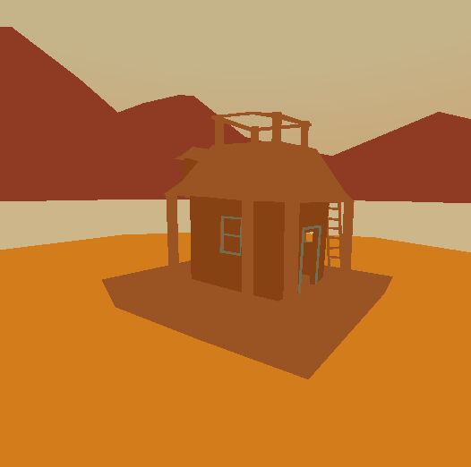

Carried
About

Carried is an experimental game and research project. The game breaks conventions around how space is portrayed in games and uses research from film theory, game studies and cognitive science. A variety of transitions play with perceptual effects such as multi-stable illusions.